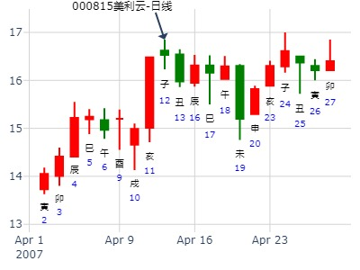
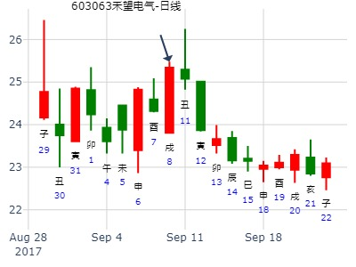
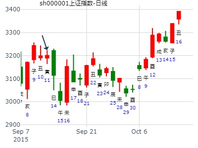

300324旋极信息本周涨跌
手摇卦
公历时间：2020年1月6日8时46分
干 支：己亥年 丁丑月 戊申日 丙辰时
旬 空：辰巳 申酉 寅卯 子丑
神 煞：驿马─寅 桃花─酉 日禄─巳 贵人─丑，未
巽宫：风雷益
六神 伏 神 【本 卦】
朱雀 ▄▄▄▄▄ 兄弟辛卯木 应
青龙 ▄▄▄▄▄ 子孙辛巳火
玄武 ▄▄ ▄▄ 妻财辛未土
白虎 官鬼辛酉金 ▄▄ ▄▄ 妻财庚辰土 世
螣蛇 ▄▄ ▄▄ 兄弟庚寅木
勾陈 ▄▄▄▄▄ 父母庚子水
八字起卦法
公历起卦时间：2016年2月4日18时44分 (手工指定)
干支：丙申年 庚寅月 丙辰日 丁酉时 （日空：子丑）
神煞：驿马－寅 桃花－酉 日禄－巳 贵人－酉，亥
巽宫：风雷益 巽宫：风雷益
六神 伏神 本 卦 变 卦
青龙 兄弟辛卯木 ▅▅▅▅▅ 应 兄弟辛卯木 ▅▅▅▅▅ 应
玄武 子孙辛巳火 ▅▅▅▅▅ 子孙辛巳火 ▅▅▅▅▅
白虎 妻财辛未土 ▅▅ ▅▅ 妻财辛未土 ▅▅ ▅▅
腾蛇 官鬼辛酉金 妻财庚辰土 ▅▅ ▅▅ 世 妻财庚辰土 ▅▅ ▅▅ 世
勾陈 兄弟庚寅木 ▅▅ ▅▅ 兄弟庚寅木 ▅▅ ▅▅
朱雀 父母庚子水 ▅▅▅▅▅ 父母庚子水 ▅▅▅▅▅
风雷益卦.主管2010年12月至2020年的时间段.
皇极经世起卦法
公历起卦时间：2016年2月4日18时44分 (手工指定)
农历：乙未年十二月廿六日酉时
立春：2016年02月04日18时00分
惊蛰：2016年03月05日11时46分
干支：丙申年 庚寅月 丙辰日 丁酉时 （日空：子丑）
神煞：驿马－寅 桃花－酉 日禄－巳 贵人－酉，亥
震宫：震为雷 (六冲) 震宫：震为雷 (六冲)
六神 伏神 本 卦 变 卦
青龙 妻财庚戌土 ▅▅ ▅▅ 世 妻财庚戌土 ▅▅ ▅▅ 世
玄武 官鬼庚申金 ▅▅ ▅▅ 官鬼庚申金 ▅▅ ▅▅
白虎 子孙庚午火 ▅▅▅▅▅ 子孙庚午火 ▅▅▅▅▅
腾蛇 妻财庚辰土 ▅▅ ▅▅ 应 妻财庚辰土 ▅▅ ▅▅ 应
勾陈 兄弟庚寅木 ▅▅ ▅▅ 兄弟庚寅木 ▅▅ ▅▅
朱雀 父母庚子水 ▅▅▅▅▅ 父母庚子水 ▅▅▅▅▅
[post]本年寅卯月震荡向下.可仓位少一点.卯月逢底建仓.
[2月4日后为寅月]
辰月至午月持股.未月逢高减仓
下半年空仓或仓位少一点.抢反弹玩玩,戌丑月还是应该仓位大点
[/post]
占事: 2015年股市测算-老陈测股
起卦方式：手动摇卦
公历时间：2015年2月4日13时42分
干支：乙未年 戊寅月 辛亥日 乙未时
旬空：辰巳 申酉 寅卯 辰巳
神煞：驿马─巳 桃花─子 日禄─酉 贵人─寅，午
巽宫：风雷益
六神 伏 神 【本 卦】
螣蛇 ▄▄▄▄▄ 兄弟辛卯木 应
勾陈 ▄▄▄▄▄ 子孙辛巳火
朱雀 ▄▄ ▄▄ 妻财辛未土
青龙 官鬼辛酉金 ▄▄ ▄▄ 妻财庚辰土 世
玄武 ▄▄ ▄▄ 兄弟庚寅木
白虎 ▄▄▄▄▄ 父母庚子水
本人2014年午月入市以来.以波断操作.第一波以军工为主.第二波以卷商为主.第三波2015年一月初重新介入军工股票000768.经过几次T操作.目前持仓价17元多.
[post]本卦为世弱.
2月4日立春.2月4日为2015年的第一天.为正月寅月.30天后为二月卯月.卦象看.寅卯月大盘不乐观.注意风险.可以半仓操作金方面和乾方位的上市公司[/post]

占事：2月20日至2月24日上证大盘预测
公历时间：2023年2月19日18时43分
干 支：癸卯年 甲寅月 戊申日 辛酉时
旬 空：辰巳 子丑 寅卯 子丑
神 煞：驿马─寅 桃花─酉 日禄─巳 贵人─丑，未
中国预测网纳甲六爻排盘
巽宫：风雷益
六神 伏 神 【本 卦】
朱雀 ▄▄▄▄▄ 兄弟辛卯木 应
青龙 ▄▄▄▄▄ 子孙辛巳火
玄武 ▄▄ ▄▄ 妻财辛未土
白虎 官鬼辛酉金 ▄▄ ▄▄ 妻财庚辰土 世
螣蛇 ▄▄ ▄▄ 兄弟庚寅木
勾陈 ▄▄▄▄▄ 父母庚子水
占事：2011年3月大盘涨跌？
公历时间：2011年2月28日16时30分 星期一
农历时间：辛卯年正月廿六申时
干支：辛卯年 庚寅月 甲寅日 壬申时 (旬空：子丑)
神煞：驿马—申 桃花—卯 日禄—寅 贵人—丑，未
巽宫：风雷益
六神 伏 神 【本 卦】
玄武 ▅▅▅▅▅ 兄弟辛卯木 应
白虎 ▅▅▅▅▅ 子孙辛巳火
螣蛇 ▅▅ ▅▅ 妻财辛未土
勾陈 官鬼辛酉金 ▅▅ ▅▅ 妻财庚辰土 世
朱雀 ▅▅ ▅▅ 兄弟庚寅木
青龙 ▅▅▅▅▅ 父母庚子水
问何日突破盘局？ 备注：以大盘替代
公历起卦时间：2021年3月17日20时16分 (电脑自动)
干支：辛丑年 辛卯月 甲子日 甲戌时 （日空：戌亥）
神煞：驿马－寅 桃花－酉 日禄－寅 贵人－丑，未
巽宫：风雷益
六神 伏神 本 卦
玄武 兄弟辛卯木 ▅▅▅▅▅ 应
白虎 子孙辛巳火 ▅▅▅▅▅
螣蛇 妻财辛未土 ▅▅ ▅▅
勾陈 官鬼辛酉金 妻财庚辰土 ▅▅ ▅▅ 世
朱雀 兄弟庚寅木 ▅▅ ▅▅
青龙 父母庚子水 ▅▅▅▅▅
官月破伏藏 世爻被克 明朗大趋势在清明
短期五爻值日可以表现 春分一过 卯木盛极而衰 下周子孙值日 五爻
白虎 涨的比较 凶猛
留验
【大涨】土升金囿(1399756175)
占事: 2014年甲午年上证指数全年卦行情
起卦方式：手工指定
公历时间：2014年1月20日0时8分
干支：癸巳年 乙丑月 辛卯日 戊子时
旬空：午未 戌亥 午未 午未
神煞：驿马─巳 桃花─子 日禄─酉 贵人─寅，午
巽宫：风雷益
六神 伏 神 【本 卦】
螣蛇 ▄▄▄▄▄ 兄弟辛卯木 应
勾陈 ▄▄▄▄▄ 子孙辛巳火
朱雀 ▄▄ ▄▄ 妻财辛未土
青龙 官鬼辛酉金 ▄▄ ▄▄ 妻财庚辰土 世
玄武 ▄▄ ▄▄ 兄弟庚寅木
白虎 ▄▄▄▄▄ 父母庚子水
主题：龙建股份在十天内的走势
乙未 己卯 乙巳 甲申 (寅卯空) 乙未年二月十一
(2015/03/30 15:20:00)
风雷益
玄武 兄弟卯木 ／ 应
白虎 子孙巳火 ／
腾蛇 妻财辛未 ∥
官鬼酉金：勾陈 妻财辰土 ∥ 世
朱雀 兄弟寅木 ∥
青龙 父母子水 ／
益静卦,占问中银证券四五六月走势归档综合时间
时间: 2022-4-5
干支: 壬寅年甲辰月戊子日 (旬空: 午未 )
益静卦
朱雀 ▅▅▅▅▅ 兄弟卯木 应
青龙 ▅▅▅▅▅ 子孙巳火
玄武 ▅▅ ▅▅ 妻财未土
白虎 ▅▅ ▅▅ 妻财辰土 世
腾蛇 ▅▅ ▅▅ 兄弟寅木
勾陈 ▅▅▅▅▅ 父母子水
占问：4月13日周五000815美利纸业“做空”可以胜出吗？
起卦方式：手动摇卦
公历时间：2007年4月12日23时32分 星期四
干支：丁亥年 甲辰月 丁丑日 庚子时 (旬空：申酉)
神煞：驿马—亥 桃花—午 日禄—午 贵人—酉，亥
巽宫：风雷益
六神 伏 神 【本 卦】
青龙 ▅▅▅▅▅ 兄弟辛卯木 应
玄武 ▅▅▅▅▅ 子孙辛巳火
白虎 ▅▅ ▅▅ 妻财辛未土
螣蛇 官鬼辛酉金 ▅▅ ▅▅ 妻财庚辰土 世
勾陈 ▅▅ ▅▅ 兄弟庚寅木
朱雀 ▅▅▅▅▅ 父母庚子水

以下是引用金眼牛在2009-4-17 19:08:00的发言：
占事：4月20-24日大盘涨跌
公历时间：2009年4月17日16时52分
星期五
干支：己丑年 戊辰月 壬辰日 戊申时 (旬空：午未)
神煞：驿马—寅 桃花—酉 日禄—亥 贵人—卯，巳
巽宫：风雷益
六神 伏 神 【本 卦】
白虎 ▅▅▅▅▅ 兄弟辛卯木 应
螣蛇 ▅▅▅▅▅ 子孙辛巳火
勾陈 ▅▅ ▅▅ 妻财辛未土
朱雀 官鬼辛酉金 ▅▅ ▅▅ 妻财庚辰土 世
青龙 ▅▅ ▅▅ 兄弟庚寅木
玄武 ▅▅▅▅▅ 父母庚子水
以下是引用金达莱在2009-4-17 20:08:00的发言：周三前下降，周四回稳，周五小涨，周收中阴线。
金达莱:卦中确实没有看出周一（乙未日）会爆涨，“周收中阴线”也要打折扣了。看样子周收阳线倒是可能了。
顺便说一句：金眼牛的卦还是非常稳定的，再客观点说是我金达莱看金眼牛的非常有感觉！
益静卦
占事: 哇哈哈摇卦122211测二周大盘
时间: 2019-04-26
干支: 己亥年戊辰月癸巳日癸亥时 (旬空: 午未 )
益静卦
六神 伏神 本 卦
白虎 ▅▅▅▅▅ 兄弟卯木 应
腾蛇 ▅▅▅▅▅ 子孙巳火
勾陈 ▅▅ ▅▅ 妻财未土
朱雀 官鬼酉金▅▅ ▅▅ 妻财辰土 世
青龙 ▅▅ ▅▅ 兄弟寅木
玄武 ▅▅▅▅▅ 父母子水
卯日应爻兄弟值班，大跌。
源文件名:2019年426周卦。风雷益静卦。居然大跌。
益静卦
占事: 下半年6-12月底股市上证-金玉堂
时间: 2021-05-23
干支: 辛丑年癸巳月辛未日己亥时 (旬空: 戌亥 )
益静卦
六神 伏神 本 卦
腾蛇 ▅▅▅▅▅ 兄弟卯木 应
勾陈 ▅▅▅▅▅ 子孙巳火
朱雀 ▅▅ ▅▅ 妻财未土
青龙 官鬼酉金▅▅ ▅▅ 妻财辰土 世
玄武 ▅▅ ▅▅ 兄弟寅木
白虎 ▅▅▅▅▅ 父母子水
源文件名:金玉堂测2021年下半年走势。风雷益静卦
000936 华西股份一周走势
现价5.38元
干支：壬寅年 乙巳月 己丑日 辛未时 （日空：午未）
神煞：驿马－亥 桃花－午 日禄－午 贵人－子，申
巽宫：风雷益 巽宫：风雷益
六神 伏神 本 卦 变 卦
勾陈 兄弟辛卯木 ▅▅▅▅▅ 应 兄弟辛卯木 ▅▅▅▅▅ 应
朱雀 子孙辛巳火 ▅▅▅▅▅ 子孙辛巳火 ▅▅▅▅▅
青龙 妻财辛未土 ▅▅ ▅▅ 妻财辛未土 ▅▅ ▅▅
玄武 官鬼辛酉金 妻财庚辰土 ▅▅ ▅▅ 世 妻财庚辰土 ▅▅ ▅▅ 世
白虎 兄弟庚寅木 ▅▅ ▅▅ 兄弟庚寅木 ▅▅ ▅▅
螣蛇 父母庚子水 ▅▅▅▅▅ 父母庚子水 ▅▅▅▅▅
蒙： 周涨
占事：测600037歌华有线在2020.6.8-2020.6.12走势
公历起卦时间：2020年6月7日10时12分 (手工指定)
干支：庚子年 壬午月 辛巳日 癸巳时 （日空：申酉）
神煞：驿马－亥 桃花－午 日禄－酉 贵人－寅，午
巽宫：风雷益
六神 伏神 本 卦
螣蛇 兄弟辛卯木 ▅▅▅▅▅ 应
勾陈 子孙辛巳火 ▅▅▅▅▅
朱雀 妻财辛未土 ▅▅ ▅▅
青龙 官鬼辛酉金 妻财庚辰土 ▅▅ ▅▅ 世
玄武 兄弟庚寅木 ▅▅ ▅▅
白虎 父母庚子水 ▅▅▅▅▅
占事：7月15-19日大盘涨跌？
公历起卦时间：2013年7月12日16时15分 (手工指定)
干支：癸巳年 己未月 己卯日 壬申时 （日空：申酉）
神煞：驿马－巳 桃花－子 日禄－午 贵人－子，申
巽宫：风雷益
六神 伏神 本 卦
勾陈 兄弟辛卯木 ▅▅▅▅▅ 应
朱雀 子孙辛巳火 ▅▅▅▅▅
青龙 妻财辛未土 ▅▅ ▅▅
玄武 官鬼辛酉金 妻财庚辰土 ▅▅ ▅▅ 世
白虎 兄弟庚寅木 ▅▅ ▅▅
腾蛇 父母庚子水 ▅▅▅▅▅
益静卦_000928
占事: 中钢国际到本周五-金玉堂
时间: 2022-08-15 （ 21：35）
干支: 壬寅年戊申月庚子日丁亥时 (旬空: 辰巳 )
益静卦
六神 伏神 本 卦
腾蛇 ▅▅▅▅▅ 兄弟卯木 应
勾陈 ▅▅▅▅▅ 子孙巳火
朱雀 ▅▅ ▅▅ 妻财未土
青龙 官鬼酉金▅▅ ▅▅ 妻财辰土 世
玄武 ▅▅ ▅▅ 兄弟寅木
白虎 ▅▅▅▅▅ 父母子水
中钢国际815一周。风雷益静卦。金玉堂。
妻财持世，子孙旬空，难涨。
占事：603063禾望电气下周涨跌
公历起卦时间：2017年9月8日18时24分 (电脑自动)
干支：丁酉年 己酉月 戊戌日 辛酉时 （日空：辰巳）
神煞：驿马－申 桃花－卯 日禄－巳 贵人－丑，未
巽宫：风雷益
六神 伏神 本 卦
朱雀 兄弟辛卯木 ▅▅▅▅▅ 应
青龙 子孙辛巳火 ▅▅▅▅▅
玄武 妻财辛未土 ▅▅ ▅▅
白虎 官鬼辛酉金 妻财庚辰土 ▅▅ ▅▅ 世
腾蛇 兄弟庚寅木 ▅▅ ▅▅
勾陈 父母庚子水 ▅▅▅▅▅

占事：下周不操作股票，会不会踏空行情 （逆风解意 元亨）
2015年9月11日14时33分 (手工指定)
乙未年 乙酉月 庚寅日 癸未时 （日空：午未）
巽宫：风雷益 巽宫：风雷益
腾蛇 兄弟辛卯木 ▅▅▅▅▅ 应 兄弟辛卯木 ▅▅▅▅▅ 应
勾陈 子孙辛巳火 ▅▅▅▅▅ 子孙辛巳火 ▅▅▅▅▅
朱雀 妻财辛未土 ▅▅ ▅▅ 妻财辛未土 ▅▅ ▅▅
青龙 官鬼辛酉金 妻财庚辰土 ▅▅ ▅▅ 世 妻财庚辰土 ▅▅ ▅▅ 世
玄武 兄弟庚寅木 ▅▅ ▅▅ 兄弟庚寅木 ▅▅ ▅▅
白虎 父母庚子水 ▅▅▅▅▅ 父母庚子水 ▅▅▅▅▅
本人于下周末有一场重要考试，准备安心学习，空仓一周。
这个决定对我是否有利，会不会使自己错过上涨行情呢？
请易友指点，祝大家好运！

占事：金发科技10月走势 悟道喜悦
公历时间：2014年9月30日10时5分
干 支：甲午年 癸酉月 甲辰日 己巳时
旬 空：辰巳 戌亥 (寅卯) 戌亥
巽宫：风雷益
六神 伏 神 【本 卦】
玄武 ▄▄▄▄▄ 兄弟辛卯木 应
白虎 ▄▄▄▄▄ 子孙辛巳火
螣蛇 ▄▄ ▄▄ 妻财辛未土
勾陈 官鬼辛酉金 ▄▄ ▄▄ 妻财庚辰土 世
朱雀 ▄▄ ▄▄ 兄弟庚寅木
青龙 ▄▄▄▄▄ 父母庚子水
第十三期１０月２０日－２４日预测上证指数比赛
公历时间：2008年10月20日9时30分 星期一
干支：戊子年 壬戌月 癸巳日 丁巳时 (旬空：午未)
神煞：驿马—亥 桃花—午 日禄—子 贵人—卯，巳
巽宫：风雷益
六神 伏 神 【本 卦】
白虎 ▅▅▅▅▅ 兄弟辛卯木 应
螣蛇 ▅▅▅▅▅ 子孙辛巳火
勾陈 ▅▅ ▅▅ 妻财辛未土
朱雀 官鬼辛酉金 ▅▅ ▅▅ 妻财庚辰土 世
青龙 ▅▅ ▅▅ 兄弟庚寅木
玄武 ▅▅▅▅▅ 父母庚子水
手摇 医药板块 辛丑最后3个农历月
公历：2021年10月27日23时40分，星期三。
农历：辛丑年 九月 廿三日 子时。
干支：辛丑年 戊戌月 己酉日 甲子时 (卦身：寅)
主变卦 风雷益(巽宫) [空亡:寅、卯]
勾陈 ▅▅▅▅▅ 兄弟辛卯木 应
朱雀 ▅▅▅▅▅ 子孙辛巳火
青龙 ▅▅ ▅▅ 妻财辛未土
玄武 官鬼辛酉金 ▅▅ ▅▅ 妻财庚辰土 世
白虎 ▅▅ ▅▅ 兄弟庚寅木
螣蛇 ▅▅▅▅▅ 父母庚子水

益静卦_600118
占事: 中国卫星在11月-金玉堂
时间: 2022-11-3 （19：44）
干支: 壬寅年庚戌月庚申日丙戌时 (旬空: 子丑 )
益静卦
六神 伏神 本 卦
腾蛇 ▅▅▅▅▅ 兄弟卯木 应
勾陈 ▅▅▅▅▅ 子孙巳火
朱雀 ▅▅ ▅▅ 妻财未土
青龙 官鬼酉金▅▅ ▅▅ 妻财辰土 世
玄武 ▅▅ ▅▅ 兄弟寅木
白虎 ▅▅▅▅▅ 父母子水
中国卫星11月。风雷益静卦。
占事：000418小天鹅明天涨跌
起卦时间：2014年11月4日17时16分 (电脑自动)
干支：甲午年 甲戌月 己卯日 癸酉时 （日空：申酉）
神煞：驿马－巳 桃花－子 日禄－午 贵人－子，申
巽宫：风雷益
六神 伏神 本 卦
勾陈 兄弟辛卯木 ▅▅▅▅▅ 应
朱雀 子孙辛巳火 ▅▅▅▅▅
青龙 妻财辛未土 ▅▅ ▅▅
玄武 官鬼辛酉金 妻财庚辰土 ▅▅ ▅▅ 世
白虎 兄弟庚寅木 ▅▅ ▅▅
腾蛇 父母庚子水 ▅▅▅▅▅
占事：2015.11.16-27日大盘走势?-wukevin
起卦方式：手动摇卦????
公历时间：2015年11月16日3时38分????
干 支：乙未年?丁亥月?丙申日?庚寅时
旬 空：辰巳???午未???(辰巳)???午未??
??
巽宫：风雷益
六神? 伏 神 【本 卦】
青龙 ▄▄▄▄▄ 兄弟辛卯木 应
玄武 ▄▄▄▄▄ 子孙辛巳火
白虎 ▄▄??▄▄ 妻财辛未土
螣蛇 官鬼辛酉金 ▄▄??▄▄ 妻财庚辰土 世
勾陈 ▄▄??▄▄ 兄弟庚寅木
朱雀 ▄▄▄▄▄ 父母庚子水
未日亥月卯爻未日三合兄弟局，大跌暴跌。
测本人下周才运
世旺卦.亥子丑寅卯日.只有丑日差.
目前持有股票
600416
601000
002533
002075
000221
期货白银多单
干支：甲午年 乙亥月 戊戌日 戊午时 （日空：辰巳）
神煞：驿马－申 桃花－卯 日禄－巳 贵人－丑，未
巽宫：风雷益
六神 伏神 本 卦
朱雀 兄弟辛卯木 ▅▅▅▅▅ 应
青龙 子孙辛巳火 ▅▅▅▅▅
玄武 妻财辛未土 ▅▅ ▅▅
白虎 官鬼辛酉金 妻财庚辰土 ▅▅ ▅▅ 世
腾蛇 兄弟庚寅木 ▅▅ ▅▅
勾陈 父母庚子水 ▅▅▅▅▅
世爻旬空冲动。
主题：恒大高新在十天内的走势
丙申 己亥 戊午 癸亥 (子丑空) 丙申年±月初四
(2016/12/02 22:30:00)
风雷益
朱雀 兄弟卯木 ／ 应
青龙 子孙巳火 ／
玄武 妻财未土 ∥ 官鬼酉金：
白虎 妻财辰土 ∥ 世
腾蛇 兄弟寅木
勾陈 父母子水 ／
玩易斋主人(407645398) 2014-12-07 21:52:10查看前后消息
占事: 12月8日至12日煌上煌
起卦方式：手动摇卦
公历时间：2014年12月7日20时7分
干支：甲午年 丙子月 壬子日 庚戌时
旬空：辰巳 申酉 寅卯 寅卯
神煞：驿马─寅 桃花─酉 日禄─亥 贵人─巳，卯
巽宫：风雷益
六神 伏 神 【本 卦】
白虎 ▄▄▄▄▄ 兄弟辛卯木 应
螣蛇 ▄▄▄▄▄ 子孙辛巳火
勾陈 ▄▄ ▄▄ 妻财辛未土
朱雀 官鬼辛酉金 ▄▄ ▄▄ 妻财庚辰土 世
青龙 ▄▄ ▄▄ 兄弟庚寅木
玄武 ▄▄▄▄▄ 父母庚子水